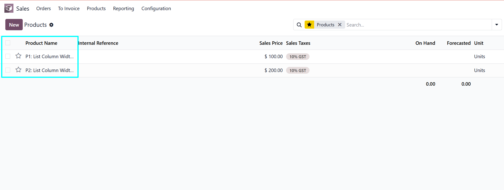
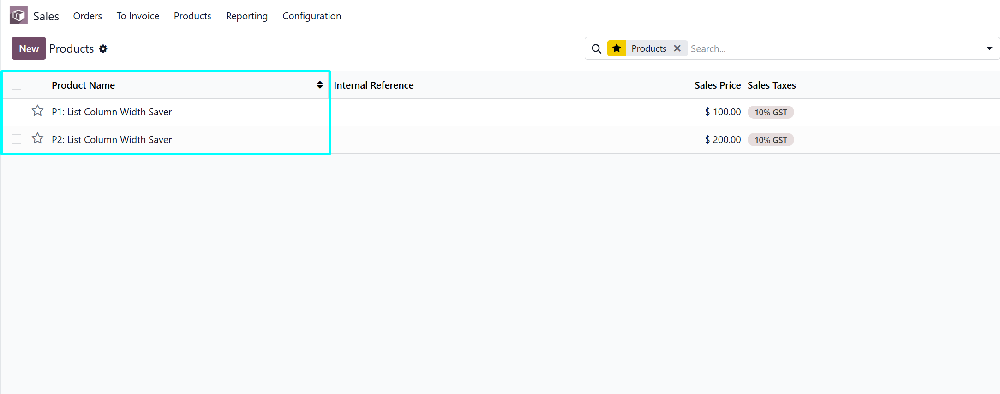
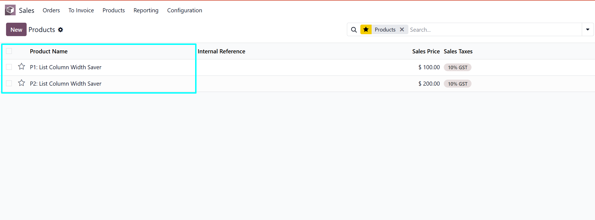

List Column Width Saver
Keep Resized List Columns Per User After Refresh
Never re-adjust your list view column widths again. This module automatically remembers and restores each user's column layout — across refreshes, navigation, and sessions.
Your list views, your way — every time you open them
Column widths are saved the instant you drag them and restored automatically on every visit — no configuration, no buttons, no effort.
Saves Column Widths Automatically
Widths are saved the moment you drag a column header handle — no extra clicks or confirmations needed.
Restores on Every Visit
Persists after page refresh, navigation, and new browser sessions. Your layout is always waiting for you.
Per-User Isolation
Storage is scoped per user, per database, and per view definition. One user's preferences never affect another's.
All List & Tree Views
Works across every list and tree view in the Odoo backend — not limited to specific models or menus.
Smart Reset
Resetting columns via Odoo's built-in action also clears the saved widths for that view, giving you a clean slate.
No Database Changes
Frontend-only using browser local storage — no schema migrations, no server-side overhead.
Lightweight, zero-footprint, and future-proof
No backend models, no database migrations. A pure frontend implementation that installs cleanly and stays out of your way.
Frontend Only
No backend models, no migrations. Pure JavaScript and OWL — installs cleanly with zero server-side footprint.
OWL Component Patching
Integrates using Odoo's standard web assets and OWL component patching — fully compatible with future Odoo updates.
Browser Local Storage
Widths are stored in the browser's local storage, keyed by database, user ID, and view definition for complete isolation.
Resize, navigate, done
No setup or configuration needed. Install the module and your column widths are saved and restored automatically from the first drag.
Resize a Column
In any list or tree view, drag the column header handle left or right to set your preferred width.
The change is saved instantly — no button to click, no confirmation required.

Navigate Away or Refresh
Leave the view, navigate elsewhere, or refresh the page. Your column widths are stored silently in the background.
The layout persists across browser sessions — closing and reopening the browser does not reset your columns.

Widths Restore Automatically
The next time you open the same list or tree view, every column appears exactly at the size you last set it — automatically, every session.
To reset a view back to defaults, use Odoo's built-in column reset action. This also clears the saved widths for a clean slate.

Install and go
No configuration needed after install. Column widths start saving automatically as soon as the module is active.
1. Add the module
Copy atliis_list_column_width_saver into your Odoo addons path.
2. Update Apps
Restart Odoo and update the app list from the Apps menu.
3. Install
Search for List Column Width Saver and install the module.
4. Done
Hard-reload the browser if needed. Column widths are now saved and restored automatically.
Common questions
Is this app compatible with both Odoo Enterprise and Community?
Yes, this module works with both Odoo Enterprise and Odoo Community editions.
Does it work across all list and tree views?
Yes. The module applies to every list and tree view in the Odoo backend — not just specific menus or models.
Are column widths saved per user?
Yes. Each user keeps their own column layout. One person's changes do not affect anyone else's view.
What happens when I reset column widths?
Using the built-in column reset action also clears the saved widths for that view, returning columns to Odoo's defaults. You can resize and save again at any time.
What happens if the visible columns change?
Saved widths are automatically ignored when the set of visible columns changes, preventing stale or mismatched layouts.
Does this module make any database changes?
No. This is a frontend-only module using browser local storage. There are no server-side changes or database migrations.
I need customisation in this module. How can I request it?
Please contact us at helpdesk@atliis.com to request customisation.
Do I get free support?
Yes, we provide 90 days free support from the date of purchase.